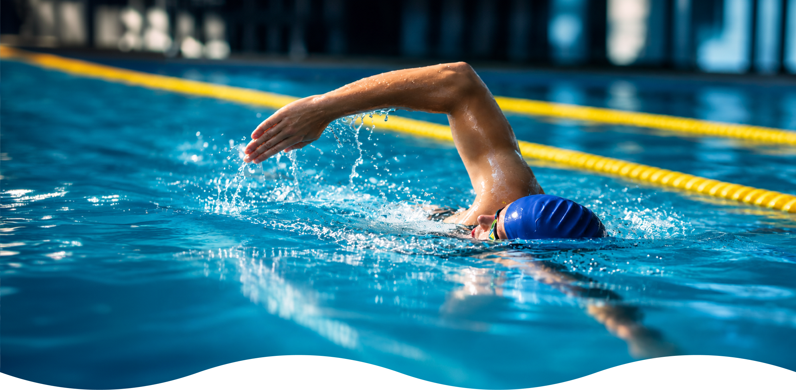
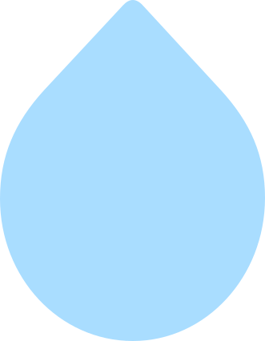
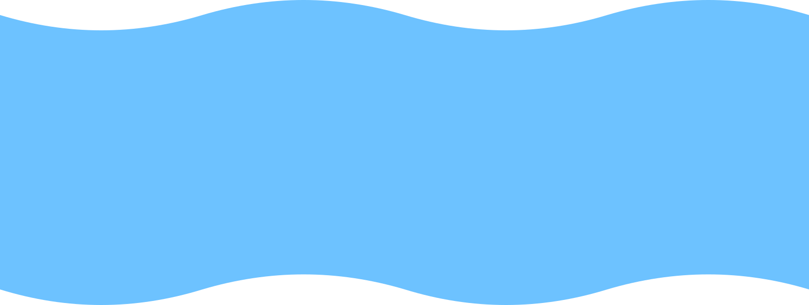
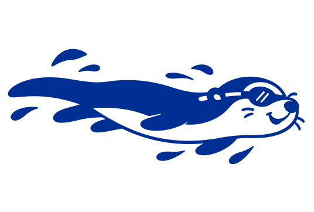
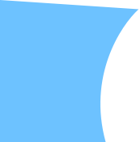

PRVNÍ TEMPA
NOVÁ PŘÁTELSTVÍ
VELKÉ CÍLE
JEDEN TÝM
PRVNÍ TEMPA
NOVÁ PŘÁTELSTVÍ
VELKÉ CÍLE
JEDEN TÝM
Plavecké kurzy

UŽ 130 LET PLAVEME V TOM SPOLUPlavecký klub Zlín
Tradice, která
má pořád tempo.
Plavecký klub Zlín byl založen již v roce 1939. Celková sportovní koncepce klubu je rozvíjena v souladu se současnými odbornými trendy a také vychází z trenérských zkušeností PaedDr. Přikryla.




To nejlepší začíná ve vodě
Pojď do toho skočit.
Vyberte si svou plaveckou cestu. S prvním krokem vám pomůžeme.
Časté dotazy
Neplavec neuplave bez pomůcek pár metrů. Mírně pokročilý uplave 25 m. Pokročilý zvládá víc délek. Po prvních lekcích to potvrdí trenér.
Odpověď zatím není v návrhu, doplní klub.
Odpověď zatím není v návrhu, doplní klub.
Příspěvek můžete zaplatit najednou za celý rok, nebo ve dvou splátkách za pololetí.